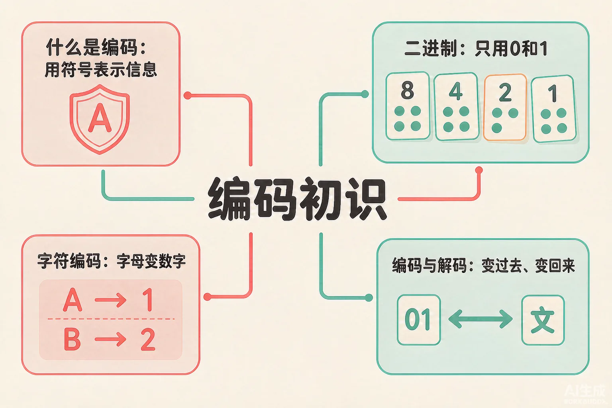
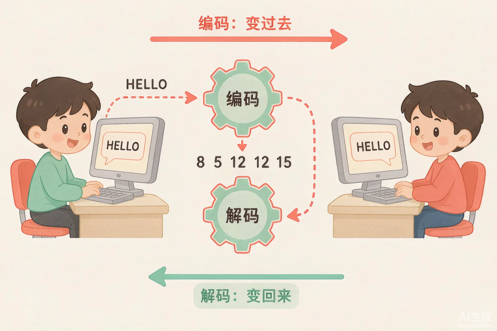
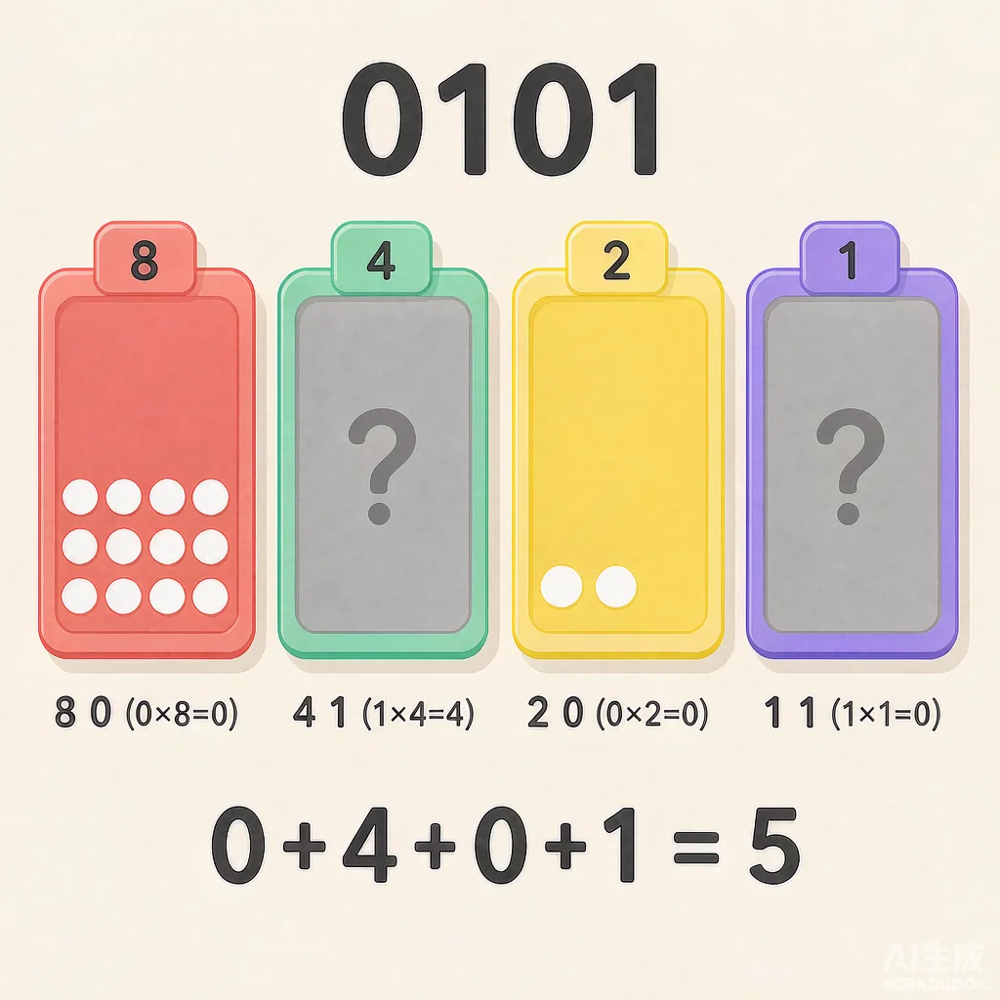

Gallery
v1.0.0 · skill v7.21.0
🤔 同一个数字，为什么计算机要写成 0101？一条消息怎么变成一串数字飞到朋友那里？

选一个你关心的问题，后面的内容会围绕它展开。
选择或输入后，本课会围绕你的问题展开。
课标依据：《义务教育信息科技课程标准（2022年版）》第二学段「数据与编码」——体验信息存储和传输过程中所必需的编码和解码步骤。
不用怕答错，凭直觉选就行——这能帮你发现自己已经知道多少。
数字 5，只能写成「5」这一种样子吗？
已经知道：你会用数字记录身高、成绩，用文字写下想法——信息本来就有很多种表达方式。
但是问题是：计算机只认 0 和 1，快递柜、条形码也不认识汉字，那信息怎么存进去、传出去？
所以这一段要解决：学会「编码」——按一套大家约定的规则，把信息换成另一种符号来表示。
按照事先约好的规则，把信息换成另一套符号。比如你的教室在「三楼 2 班」，写成门牌号就是 302——这就是把信息编码成数字。
拿到 302 的人，用同一套规则倒过来读：三楼 2 班。编码和解码用的是同一套规则，信息才能还原。
快递柜取件码、商品条形码、车牌号、门牌号、学号……它们都把复杂的信息变成了简短、整齐、机器也认识的符号。

计算机只认 0 和 1。四张点卡分别代表 8、4、2、1 个点：翻开的卡算它的点数（记 1），扣下的卡不算（记 0）。点卡片试试，看看你能不能翻出右边的目标数！

当前编码与点数
接受挑战：翻出目标数
点卡能编数字，那文字怎么办？用规则！最简单的一条规则是：A=1，B=2，C=3……Z=26。字母在表里的第几位，就编成数字几。
H 是第 8 个字母
E 是第 5 个字母
L 是第 12 个字母
⚠️ 易错提醒 1：规则是双方共用的！如果你偷偷把 A=1 改成 A=2，朋友按原规则解码就会全乱套。编码和解码必须用同一套规则——这就是为什么全世界的计算机都遵守统一的编码标准。
⚠️ 易错提醒 2：二进制 0101 要读成「零、一、零、一」四个数字，不能读成「一百零一」——每一位只代表"翻"或"不翻"，不是普通的多位数。
其实计算机里真实用的字符编码（比如 ASCII 码）也是这个思路：给每个字符一个约定好的编号，只是编号表更长、更完整。你以后会见到它！
用规则 A=1~Z=26，把你自己的消息编成数字串；再接一题解码挑战，当一回「接收方」。
点「出题」，把数字串还原成单词：
例题：用 8、4、2、1 四张点卡，把数字 5 编码成二进制，并验证解码正确。
四张卡的点数是 8、4、2、1。5 比 8 小，所以 8 这张要扣下；5 可以拆成 4+1。口诀：从大往小挑，够翻就翻，翻完刚好等于目标数。
按 8、4、2、1 的顺序排好：8 扣下记 0，4 翻开记 1，2 扣下记 0，1 翻开记 1 → 得到 0101。注意读法：零一零一，不是一百零一！
倒回来算点数：0+4+0+1 = 5 ✔ 和原数一样，说明编码正确。最后在实验室里亲手翻一遍，加深印象！
小明和小红约好用 A=1、B=2 编码传纸条。后来小明偷偷把规则改成 A=2、B=3，还是写了「3 1」给小红。小红按原来的规则解码，会得到什么？
回到二进制点卡实验室，翻出 3、7、10 的编码，把三串二进制写在笔记本上（答案示例：0011、0111、1010）。
用消息编码器把你的名字首字母编成数字串，写在小纸条上和同桌交换，各自解码还原——规则不一致的同学要重新约定哦。
设计一套你自己的编码：比如只用 2 张点卡能表示几个数？或者给全班同学每人编一个「学号密码」。把你的规则写下来，并说明别人怎么解码。
新情境：医院的药品柜上贴着条形码，扫码枪一扫就能找到药。条形码在这里起到的作用，最像本课学的什么？
开课时你问过：为什么计算机只认 0 和 1？现在你能回答了——计算机用电路的「通」和「断」记住信息，正好对应 1 和 0，所以一切信息都要先按规则编码成 0 和 1，需要时再解码还原。
本节点的前置、后续和同域知识。